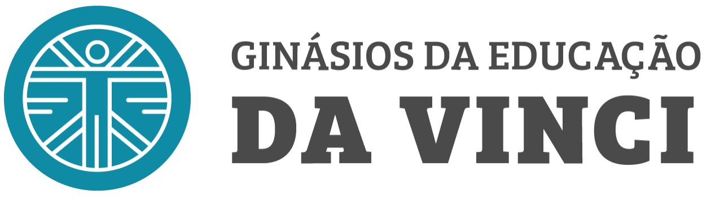

Estatística
Matemática A · 10.º ano · escolhe a parte que queres verMathematics A · Year 10 · choose the part you want to see
Como queres ver o vídeo?
- 1Introdução à EstatísticaCapítulo 1 · temas 1 a 4Introduction to Statistics · Chapter 1Abrir a apresentação
- 2Dados univariadosCapítulo 2 · temas 5 a 9Univariate data · Chapter 2Abrir a apresentação
- 3Medidas estatísticasCapítulo 3 · temas 10 a 14Statistical measures · Chapter 3Abrir a apresentação
- 4Dados bivariadosCapítulo 4 · temas 15 e 16Bivariate data · Chapter 4Abrir a apresentação
- 5Exercícios finaisEscolha múltipla (1 a 24) e questões tipo exame (71 a 79)Final exercises · multiple choice and exam-style questionsAbrir a apresentação
- 6Teste final: resoluçãoGrupo I e Grupo II, passo a passoFinal test: solutions · step by stepAbrir a apresentação
Percursos: breve ou aprofundadoLearning paths: short or in depth
O breve faz um exercício por tema, para quem tem pouco tempo; o aprofundado faz todos. Os números são os dos exercícios da ficha; os tempos incluem ler a teoria e o exemplo.
| Tema | Breve | Aprofundado |
|---|---|---|
| Capítulo 1 · Introdução à EstatísticaChapter 1 · Introduction to Statistics | ≈ 45 min | ≈ 1 h 15 |
| 1. O procedimento estatístico | ex. 1 10 min | ex. 1 10 min |
| 2. Censo e sondagem | ex. 2 10 min | ex. 2, 3 15 min |
| 3. Amostragem | ex. 5 15 min | ex. 4–9 35 min |
| 4. Variáveis estatísticas | ex. 10 10 min | ex. 10, 11 15 min |
| Capítulo 2 · Dados univariadosChapter 2 · Univariate data | ≈ 1 h 40 | ≈ 2 h 40 |
| 5. Tabelas de frequências | ex. 12 20 min | ex. 12, 13 25 min |
| 6. Representações gráficas | ex. 14 15 min | ex. 14–16 30 min |
| 7. Diagrama de caule-e-folhas | ex. 17 15 min | ex. 17, 18 25 min |
| 8. Dados agrupados em classes. Histograma | ex. 19 25 min | ex. 19, 20 30 min |
| 9. Função cumulativa | ex. 25 25 min | ex. 21–25 50 min |
| Capítulo 3 · Medidas estatísticasChapter 3 · Statistical measures | ≈ 1 h 45 | ≈ 4 h 40 |
| 10. Média | ex. 31 15 min | ex. 26–33 45 min |
| 11. Moda e mediana | ex. 39 20 min | ex. 34–42 50 min |
| 12. Quartis e percentis | ex. 43, 48 45 min | ex. 43–53 100 min |
| 13. Medidas de dispersão | ex. 58 15 min | ex. 54–62 60 min |
| 14. Propriedades da média e do desvio-padrão | ex. 66 10 min | ex. 63–67 25 min |
| Capítulo 4 · Dados bivariadosChapter 4 · Bivariate data | ≈ 35 min | ≈ 40 min |
| 15. Diagrama de dispersão e coeficiente de correlação | ex. 68 10 min | ex. 68, 69 15 min |
| 16. Reta de regressão | ex. 70 25 min | ex. 70 25 min |
| Exercícios finaisFinal exercises | ≈ 30 min | ≈ 2 h 15 |
| Escolha múltipla e tipo exame | EM 4, 7, 11, 12, 15, 19, 20, 24; ex. 75 | EM 1–24; ex. 71–79 |
| Teste finalFinal test | 1 h 30 | |
| Total (sem o teste) | ≈ 5 h 15 | ≈ 11 h 30 |